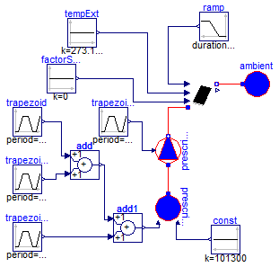

Ejemplos de funcionamiento de captadores solares
Package Content

Modelica definition
model Validacion_ColectorSolar_01
Modelica.Blocks.Sources.Trapezoid trapezoid(
amplitude=29,
rising=60,
falling=60,
offset=273.15,
startTime=300,
width=3600,
period=14400);
Modelica.Blocks.Sources.Trapezoid trapezoid1(
amplitude=16,
rising=10,
falling=10,
width=3600,
offset=0,
startTime=1200,
period=14400);
Modelica.Blocks.Sources.Trapezoid trapezoid2(
amplitude=29,
rising=10,
width=3600,
falling=10,
startTime=2400,
period=14400);
Soltermica.ColectoresSolares.ColectorSolar colectorSolar(
medium=Modelica.Thermal.FluidHeatFlow.Media.Water(),
espec=Soltermica.ColectoresSolares.CatalogoEquipos.BAXIROCA_PS_2_0(),
T_ini=288.15);
Modelica.Thermal.FluidHeatFlow.Sources.Ambient ambient(medium=
Modelica.Thermal.FluidHeatFlow.Media.Water(), p_Ambient=101300);
Modelica.Thermal.FluidHeatFlow.Sources.PrescribedVolumeFlow
prescribedVolumeFlow(medium=Modelica.Thermal.FluidHeatFlow.Media.Water(), m=
0.1);
Modelica.Thermal.FluidHeatFlow.Sources.PrescribedAmbient prescribedAmbient(
medium=Modelica.Thermal.FluidHeatFlow.Media.Water());
Modelica.Blocks.Sources.Trapezoid trapezoid3(
amplitude=0.00011,
rising=5,
width=7200,
falling=5,
offset=0,
startTime=2,
period=25000);
Modelica.Blocks.Sources.Constant const(k=101300);
Modelica.Blocks.Sources.Constant tempExt(k=273.15 + 30);
Modelica.Blocks.Math.Add add;
Modelica.Blocks.Math.Add add1;
Modelica.Blocks.Sources.Ramp ramp(
duration=10,
offset=883,
height=-882,
startTime=10800);
Modelica.Blocks.Sources.Constant factorSombras(k=0);
equation
connect(colectorSolar.flowPort_b, ambient.flowPort);
connect(prescribedVolumeFlow.flowPort_b, colectorSolar.flowPort_a);
connect(prescribedAmbient.flowPort, prescribedVolumeFlow.flowPort_a);
connect(trapezoid3.y, prescribedVolumeFlow.VolumeFlow);
connect(const.y, prescribedAmbient.p_Ambient);
connect(tempExt.y, colectorSolar.senalTemperatura);
connect(trapezoid.y, add.u1);
connect(trapezoid1.y, add.u2);
connect(trapezoid2.y, add1.u2);
connect(add.y, add1.u1);
connect(add1.y, prescribedAmbient.T_Ambient);
connect(ramp.y, colectorSolar.senalIrradiacion);
connect(factorSombras.y, colectorSolar.factorSombras);
end Validacion_ColectorSolar_01;
HTML-documentation generated by Dymola Mon Jun 09 02:33:11 2014.